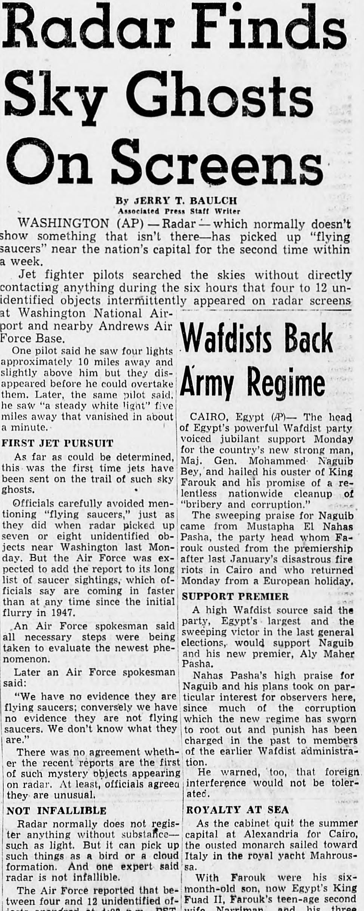
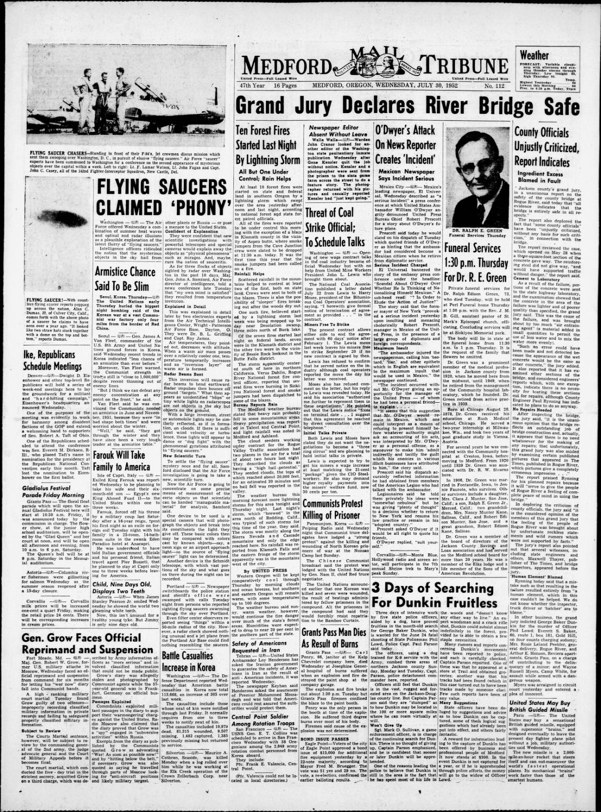

HN HN-589 · July 28, 1952 · Paranormal, Folklore & Curiosities > UFOs & Unidentified Sightings > Unidentified aerial sightings
Source: Indianapolis Times, p. 3 — original page; National Archives, Air Force UFO case files.
Report: “Air Force Jets Give Chase to 'Flying Saucers' Over Capital†paired reports of unusual radar returns near Washington, D.C., with pilots being sent to investigate.
Assessment: Radar observations and intercept sorties are real reported events; the newspaper label “flying saucers†is an interpretation, not physical evidence of extraterrestrial craft. Records of weather conditions, sensor behavior, air traffic, and individual pilot observations must be separated case by case.
Authentic scans retrieved from Historic Oregon Newspapers (University of Oregon). Article crops are located using the archive's own ALTO OCR word coordinates and rendered at native crop resolution; page scans are 1,200-pixel-wide renditions. No images were generated, mocked, or retouched.


Not yet acquired. Queued for provider-specific acquisition testing (see source-acquisition manifest).
URL (preserved verbatim): https://newspapers.library.in.gov/?a=d&d=IPT19520728.1.3
Saved research report: Historical_Newspaper_Event_Research_578-602_2026-10-23.md
Evidence note: A newspaper report means a historical publication made a claim; it does not establish that claim as fact. Contemporary reporting is separated from later scholarly context and our own assessment.